1. Introduction
The goal of this project is to study customer churn as a time-to-event problem. In this setting, the event of interest is customer churn, the time variable is customer tenure measured in months, and customers who have not churned by the end of the observation window are treated as right-censored observations.
The main workflow included:
- Kaplan-Meier estimation for overall and subgroup survival curves
- Log-rank tests for comparing survival curves
- Cox Proportional Hazards modeling for multi-variable risk analysis
- Log-Logistic Accelerated Failure Time (AFT) modeling as a parametric alternative
- A survival-based customer lifetime value (CLV) extension
2. Dataset and Cohort Construction
The original dataset is the IBM Telco Customer Churn dataset stored in
Telco-Customer-Churn.csv.
2.1 Raw dataset
The notebook first loaded the full CSV file with Spark and then cleaned the columns.
Raw row count: 7,043 customers
2.2 Preprocessing steps
- All CSV columns were read as strings first to avoid type-inference problems.
- Important numeric fields such as
tenure,MonthlyCharges, andTotalChargeswere cast to numeric types. -
A binary event variable
churn_eventwas created:1= the customer churned0= the customer did not churn during the observation period
-
The analysis cohort was restricted to:
- customers with Month-to-month contracts
- customers with an active internet service (
internet_service != 'No') - rows with non-missing
tenure,monthly_charges, andtotal_charges
This filtering step was important because it aligned the cohort with the business problem: short-cycle churn behavior among active service users.
2.3 Final analysis cohort
After filtering, the final cohort contained 3,351 customers.
| churn_event | Meaning | Count |
|---|---|---|
| 0 | right-censored (still active) | 1,795 |
| 1 | churned | 1,556 |
3. Methodology
3.1 Why survival analysis?
A standard classification model only predicts whether a customer will churn. Survival analysis is more informative because it also models when churn is likely to happen. This is useful in customer-retention problems because timing matters: a customer who churns after 2 months is very different from one who churns after 30 months.
3.2 Duration and event variables
Define:
T_values = tenure: the observed customer lifetime in monthsE_values = churn_event: whether churn occurred during observation
The Kaplan-Meier, Cox, and AFT models all use these two variables as the core survival-analysis inputs.
4. Kaplan-Meier Analysis
4.1 Overall Kaplan-Meier curve
The Kaplan-Meier estimator was used to estimate the survival function for the entire cohort.
The survival function S(t) gives the probability that a customer survives
and does not churn beyond time t.
Result:
- Median survival time = 34.00 months
This means that, for the filtered cohort, the estimated probability of remaining active falls to about 0.5 at roughly 34 months.
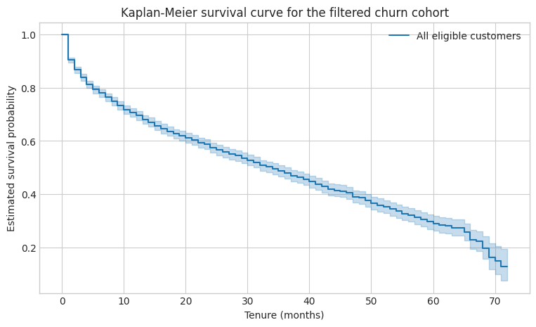
4.2 Interpretation
The overall Kaplan-Meier curve shows that survival probability decreases gradually over time, which is expected in a customer-churn setting. The confidence interval widens at later months because fewer customers remain under observation in the tail of the curve.
5. Grouped Kaplan-Meier Curves and Log-Rank Tests
To understand which customer characteristics are associated with different churn behavior, the notebook plotted Kaplan-Meier curves by subgroup and then ran log-rank tests.
5.1 Online security
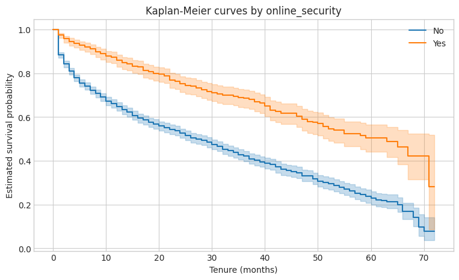
Log-rank test p-value: 0.000000
The survival curves for customers with and without online security were clearly different. Customers with online security had a higher survival probability over time, indicating better retention.
5.2 Tech support
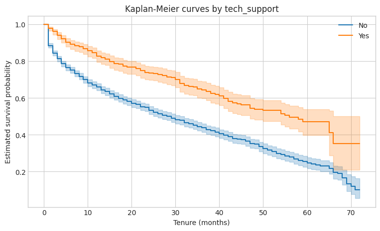
Log-rank test p-value: 0.000000
The survival curves for customers with and without tech support were also clearly separated. Customers with tech support showed stronger retention over time.
5.3 Gender
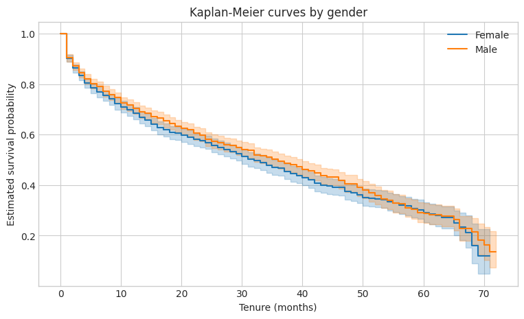
Log-rank test p-value: 0.153317
Gender did not produce a statistically significant difference in survival curves at the 5% level.
5.4 Summary of subgroup tests
| Variable | p-value | Interpretation |
|---|---|---|
| online_security | 0.000000 | strong evidence that the survival curves differ |
| tech_support | 0.000000 | strong evidence that the survival curves differ |
| gender | 0.153317 | no strong evidence of a survival difference |
These results suggest that service-related variables are much more informative for churn timing than demographic gender information in this cohort.
6. Cox Proportional Hazards Model
6.1 Purpose of the Cox model
The Cox Proportional Hazards model was used to examine the effect of multiple covariates on churn risk at the same time. The hazard can be interpreted as the instantaneous risk of churn, conditional on having remained active up to that time.
The notebook included the following predictors:
dependents_Yesinternet_service_DSLonline_backup_Yestech_support_Yespaperless_billing_Yes
6.2 Cox results
| Variable | Coefficient | Hazard Ratio exp(coef) |
p-value | Interpretation |
|---|---|---|---|---|
| dependents_Yes | -0.319851 | 0.726257 | 6.526522e-06 | customers with dependents have lower churn risk |
| internet_service_DSL | -0.196007 | 0.822006 | 1.015562e-03 | DSL users have lower churn risk than the comparison group |
| online_backup_Yes | -0.785194 | 0.456031 | 4.578070e-40 | online backup is strongly associated with lower churn risk |
| tech_support_Yes | -0.636002 | 0.529405 | 3.069026e-17 | tech support is strongly associated with lower churn risk |
| paperless_billing_Yes | 0.145916 | 1.157099 | 1.872582e-02 | paperless billing is associated with slightly higher churn risk |
6.3 Interpretation of hazard ratios
A hazard ratio below 1 means the variable is associated with a lower churn hazard. A hazard ratio above 1 means the variable is associated with a higher churn hazard.
The strongest protective effects in this model came from:
- online backup (
HR = 0.456) - tech support (
HR = 0.529) - having dependents (
HR = 0.726)
The only variable that increased churn hazard in this fitted Cox model was
paperless billing (HR = 1.157).
A possible business interpretation is that customers using paperless billing may overlap
with more digital, price-sensitive, or short-term customer segments, although this interpretation
would need further validation.
7. Proportional Hazards Assumption Check
The Cox model relies on the proportional hazards assumption, which means the relative hazard between groups should stay approximately stable over time.
We evaluated this assumption using a proportional-hazards test and log-log survival plots.
7.1 Test results
| Variable | Test statistic | p-value | Interpretation |
|---|---|---|---|
| dependents_Yes | 0.849016 | 3.568309e-01 | no strong violation detected |
| internet_service_DSL | 24.407959 | 7.794601e-07 | possible violation |
| online_backup_Yes | 16.553075 | 4.730721e-05 | possible violation |
| tech_support_Yes | 2.337874 | 1.262618e-01 | no strong violation detected |
| paperless_billing_Yes | 13.908217 | 1.919575e-04 | possible violation |
7.2 Interpretation
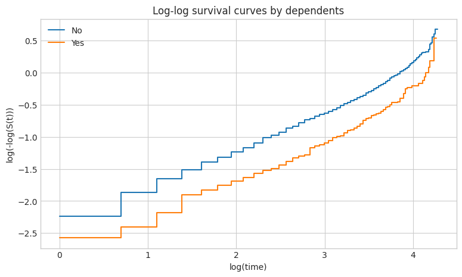
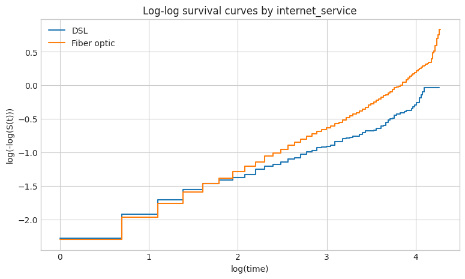
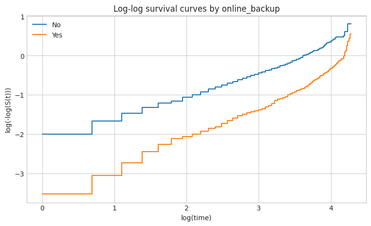
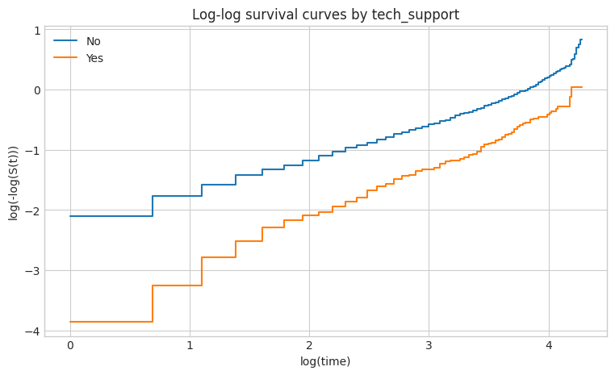
The proportional-hazards assumption appears reasonable for dependents_Yes and
tech_support_Yes, but potential violations were detected for
internet_service_DSL, online_backup_Yes, and
paperless_billing_Yes. This suggests that a pure Cox interpretation may not fully
capture all time-varying behavior in the data.
For this reason, we also fit a parametric AFT model as a complementary analysis.
8. Accelerated Failure Time (AFT) Model
8.1 Why use an AFT model?
The AFT model provides an alternative survival-modeling perspective. Instead of modeling hazard directly, it models the survival time itself. In this notebook, a Log-Logistic AFT model was used.
In an AFT model, positive coefficients generally indicate that a variable stretches customer survival time, while negative coefficients would suggest shorter survival time.
8.2 AFT results
We used the following encoded predictors in order:
partner_Yesmultiple_lines_Yesinternet_service_DSLonline_security_Yesonline_backup_Yesdevice_protection_Yestech_support_Yespayment_method_Bank transfer (automatic)payment_method_Credit card (automatic)
The fitted AFT summary showed positive coefficients for all selected service and payment covariates included in the model output. The exponentiated coefficients were all greater than 1, which is consistent with longer expected survival times for these customer profiles.
| Term (in notebook model order) | Coefficient | exp(coef) |
p-value |
|---|---|---|---|
| partner_Yes | 0.484055 | 1.622641 | 6.108834e-12 |
| multiple_lines_Yes | 0.383733 | 1.467754 | 6.313886e-07 |
| internet_service_DSL | 0.662820 | 1.940255 | 5.231488e-22 |
| online_security_Yes | 0.812815 | 2.254245 | 2.781651e-31 |
| online_backup_Yes | 0.861583 | 2.366904 | 4.368206e-24 |
| device_protection_Yes | 0.676767 | 1.967506 | 1.737989e-24 |
| tech_support_Yes | 0.739827 | 2.095573 | 8.452904e-16 |
| payment_method_Bank transfer (automatic) | 0.799044 | 2.223415 | 6.334807e-17 |
| payment_method_Credit card (automatic) | 0.689300 | 1.992320 | 2.752017e-15 |
Median survival time on the original month scale = 135.51 months
8.3 Interpretation
The AFT results are broadly consistent with the earlier Kaplan-Meier and Cox findings: support-oriented and value-added services are associated with longer customer survival. The large estimated median survival time from the AFT model should be interpreted carefully because it is model-based and depends on the parametric distributional assumption.
9. AFT Diagnostic Plots
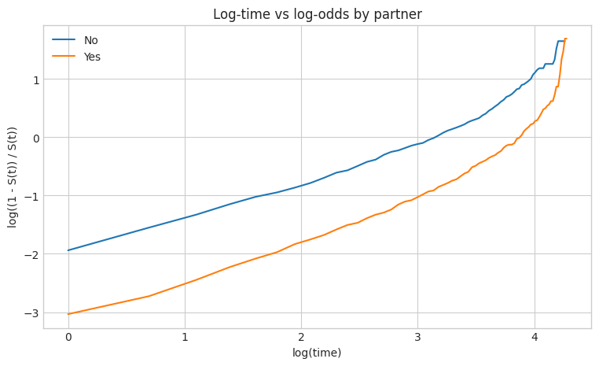
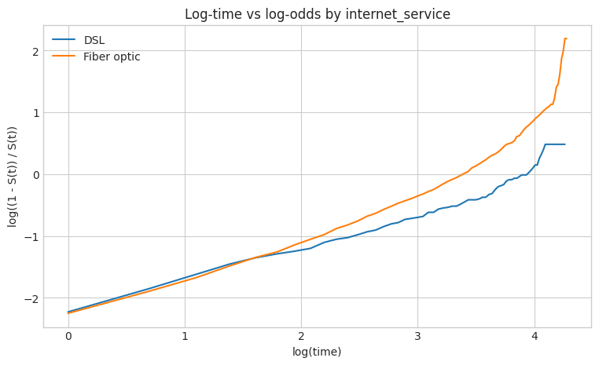
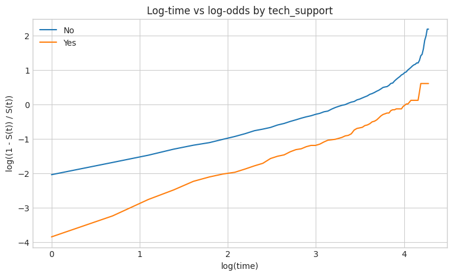
These plots compared log(time) against log((1-S(t))/S(t)) for each group.
The purpose was to assess whether the Log-Logistic AFT assumption was reasonable.
If the transformed curves are approximately linear and reasonably parallel, then the chosen AFT
specification is more plausible.
10. Customer Lifetime Value (CLV) Extension
The final section of the notebook translated survival predictions into business value. The CLV logic was:
- predict a customer’s survival probability over time using the fitted Cox model,
- multiply survival probability by monthly profit to obtain expected monthly profit,
- discount future profits using an annual discount rate,
- accumulate discounted profits into cumulative net present value (NPV).
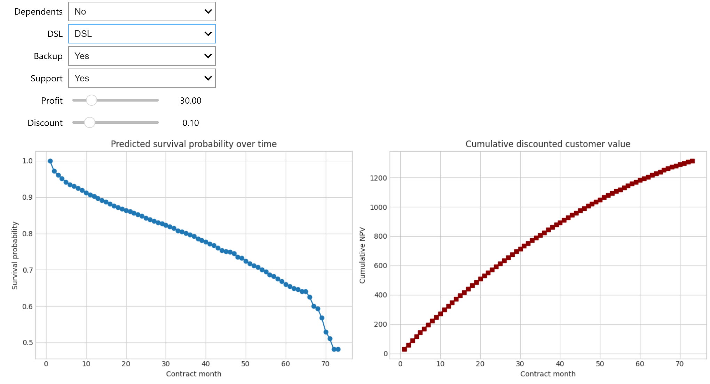
The CLV calculator allows the user to vary:
- whether the customer has dependents,
- whether the customer uses DSL,
- whether the customer has online backup,
- whether the customer has tech support,
- monthly profit,
- annual discount rate.
This extension is valuable because it connects statistical survival analysis with customer-retention economics.
11. Main Findings
- The median observed survival time from the Kaplan-Meier curve was 34 months.
- Online security and tech support significantly improved customer survival, while gender did not show a significant effect.
- In the Cox model, online backup and tech support were the strongest factors associated with lower churn hazard.
- The proportional-hazards test suggested that some Cox covariates may have time-varying effects, especially
internet_service_DSL,online_backup_Yes, andpaperless_billing_Yes. - The Log-Logistic AFT model supports the same general business conclusion: service-related features are associated with longer customer survival.
- The CLV section demonstrated how survival probabilities can be converted into discounted customer value for decision support.